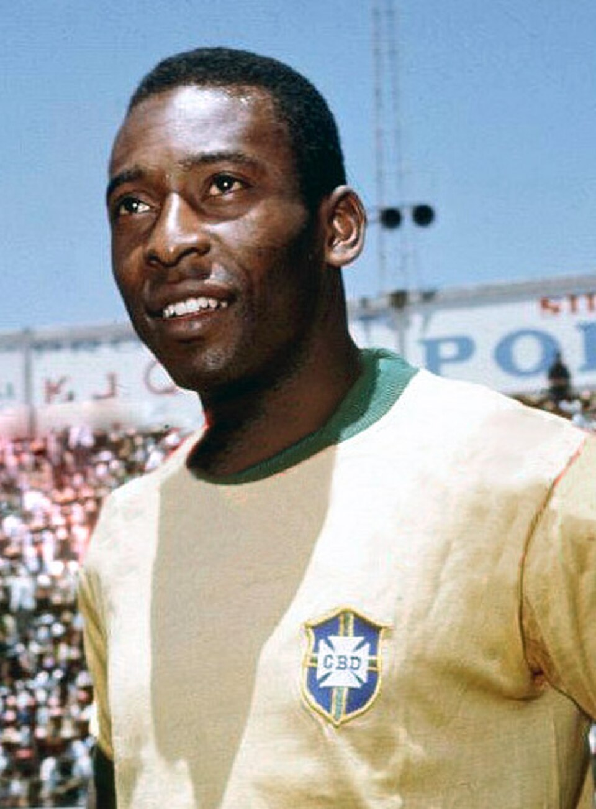

El Gráfico (1970) / Wikimedia Commons
Jogador de futebol
Pelé
Nascimento
23 de outubro de 1940
Origem
Três Corações, Minas Gerais
Biografia
Edson Arantes do Nascimento (1940–2022), conhecido como Pelé, foi um futebolista brasileiro que atuou como atacante. Apelidado de Rei do Futebol, destacou-se no Santos, na seleção brasileira e no New York Cosmos.
Importância e legado
Pelé revolucionou o futebol mundial e ajudou a tornar o Brasil uma referência no esporte. Foi o único jogador a conquistar três Copas do Mundo masculinas (1958, 1962 e 1970) e tornou-se um símbolo de representatividade negra.
Você sabia?
Pelé conquistou sua primeira Copa do Mundo aos 17 anos. Fora dos campos, também atuou como músico, ator e ministro do Esporte, participando da elaboração da Lei Pelé.